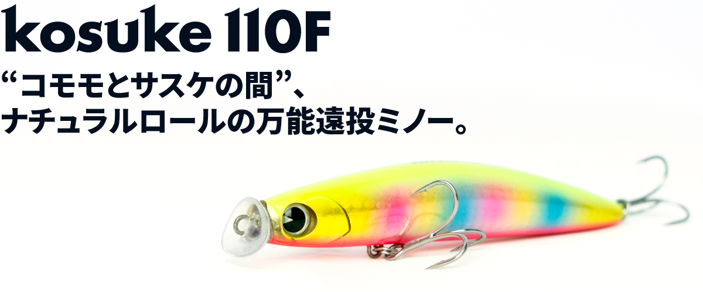
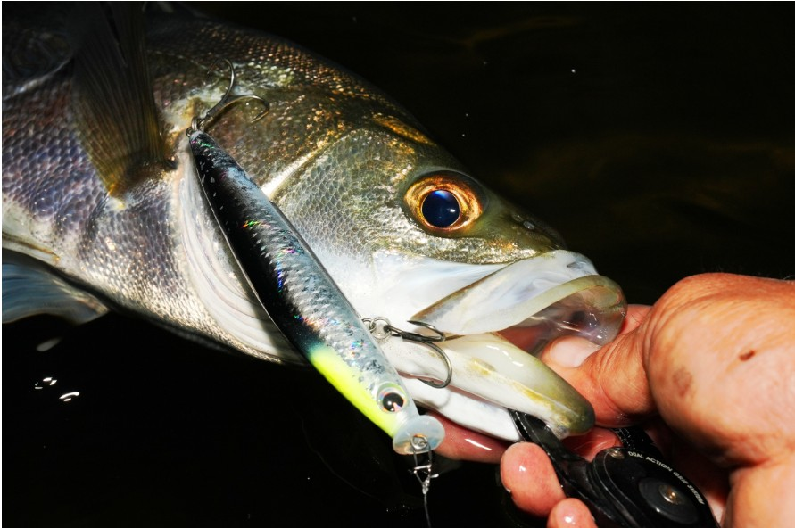
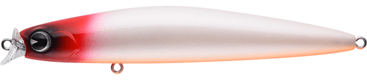
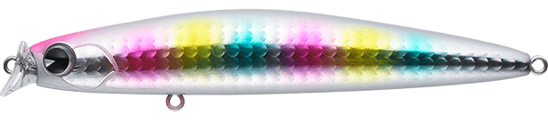
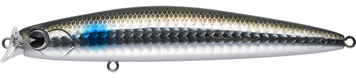
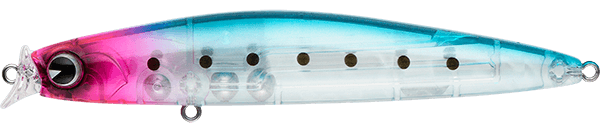

kosuke110F
kosuke110Fはimaの名作フローティングミノー。
kosuke 110FがMRDシステム搭載で新型へリニューアル。より高性能になった万能ミノーの釣れる秘訣を徹底解説。

スペック
- メーカー
- ima
- 長さ
- 110 mm
- 重さ
- 19 g
- フック
- #4×2
- レンジ
- 40～80 cm
- タイプ
- フローティング
- アクション
- ローリング
- ターゲット
- シーバス
- 価格
- 2640円(税込)
- 発売日
- 2026年4月10日
- 開発者
- 川本斗既
コスケ110Fの特徴
いつでも、どこでも、だれでも使いやすい万能ミノーがリニューアルして再登場。
-
MRD搭載により遠投性能UPと泳ぎだしが抜群
imaの重心移動システムの”MRD”搭載により、遠投性能の向上とアクションの立ち上がり性能が向上。
-
オリジナルなフットボール型リップ
水噛みがよく、頭下がりのきれいな姿勢を保つ。乱れた流れの中でもバランスの崩しにくい設計。
-
年中！どこでも！使える万能ルアー
潜らず浅すぎない潜行深度設定とややロール気味なアクション。巻き速度はスローからファストまでの全域でアクションが破綻しないバランス性能。
コスケ110Fの使い方・得意な状況
コスケ110Fはエリア、シーズン問わず使えます。
特にオーブンエリアで表層を広範囲にサーチするのに使えます。
アクションは、波動が弱めのナチュラルロールで、活性の高い時ではなく、活性が下がっているなどに投げるのがベスト。
パイロットルアーではなく、2番目に投げるのに使いやすいルアーです。
水噛みが良いので、初心者もただ巻きで釣れるルアーになっています。
ワンポイント
飛距離が必要でかつ表層を漂わせたい場面で活躍
飛距離だけならシンペンでよいが、飛距離だけでなく、横方向への流れに乗せていきたいときにフローティングミノーのkosuke110Fが最適。
水面が荒れているようなサーフや磯では、アクションの立ち上がりの良さを感じることができます。

画像出典:ima公式
オススメカラー

レッドヘッドパールOBシーバス定番のレッドヘッドカラー。とりあえずこれ

コットンキャンディーなぜか釣れるコットンキャンディ。玄人はこれを選ぶ。

ボラボラそっくりカラーで、河川での釣りで間違いなし。

PHBBC唯一のクリアカラー。小型ベイトが多い場所では一番釣れる。
画像出典:ima公式HP
コスケ110Fに似ているルアー
- kosuke110s
- kosuke130f
- komomo countor 110f